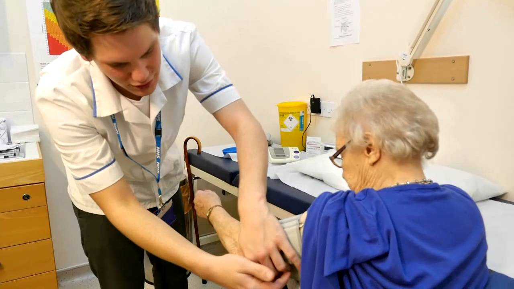

Worked in accordance with Laboratory Medicine Standard Operating Procedures and Quality Management System. Ensured all diagnostic samples are assigned to the correct patient record in the laboratory information system (Telepath).
Ensured that all specimen discrepancies, especially mislabelled, lost or leaking samples are recorded and reported to the requestor or appropriate senior staff as per departmental SOPs.
Reported promptly when quality control or assurance procedures indicate loss of performance of laboratory instruments.
Complied with COSHH regulations and risk assessments in the handling of a wide range of hazardous materials.
Successfully completed training in blood science analysers and equipment maintenance.

Successfully completed a week of training on safeguarding of vulnerable adults and children, manual handling, infection control, usage of hoist and medication administration/prompting. Provided the care required for elderly by ensuring they had an adequate intake of calories and fluid, administered or prompted the intake of medication.
Ensured privacy (freedom from intrusion) and dignity (being worthy of respect) for all service users.
Communicated with service users and their family to make sure that their needs are met and to further assist them with mobility, hygiene, medication and nutrition/fluid intake.
Created engaging lesson plans that meet the requirements of the National Curriculum, keeping up-to-date with changes.
Planned classes to include a variety of demonstrations, instruction, hands-on activities, group work and individual projects, providing pupils with opportunities to learn through different methods.
Taught lessons at an appropriate level to include all pupils, aiding their understanding of the three major sciences: physics, chemistry, and biology.
Adapted teaching approach and materials according to the pupils’ abilities, giving them the opportunity to question and investigate.
Communicated effectively with the pupils so they are clear about the objectives of each lesson and project.
Demonstrated experiments and assisting pupils to safely carry out practical experiments themselves, to enhance their comprehension of the topic.
Encouraged and supported pupils in their own research for science projects.